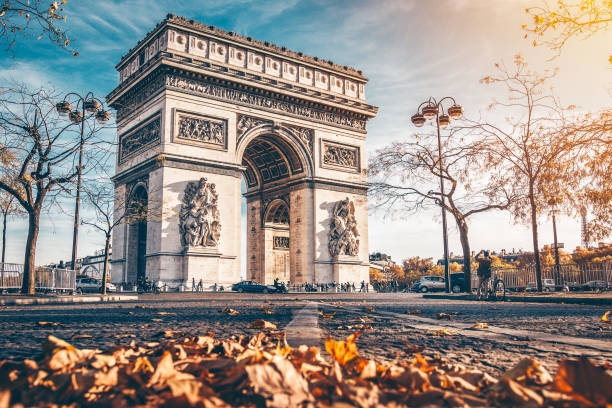

Parisul este capitala Franței și unul dintre cele mai vizitate orașe din lume. Acesta este renumit pentru arhitectura sa impresionantă, gastronomie de top și o cultură vibrantă.
| Mijloc | Rută populară | Preț mediu |
|---|---|---|
| Metrou | Linha 1: La Défense - Château de Vincennes | 1,90€ |
| Autobuz | Line 38: Gare du Nord - Porte d'Orléans | 1,90€ |